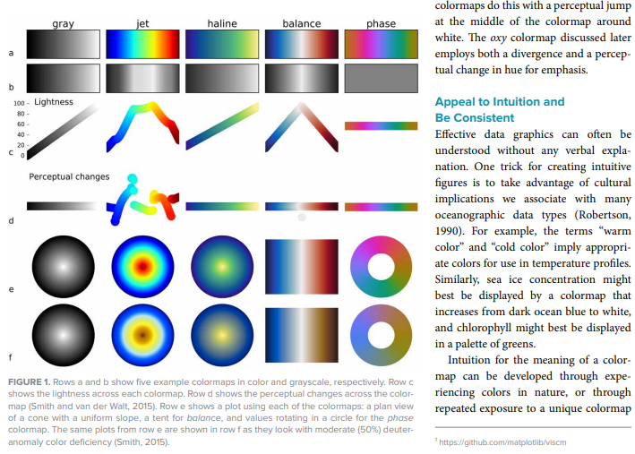
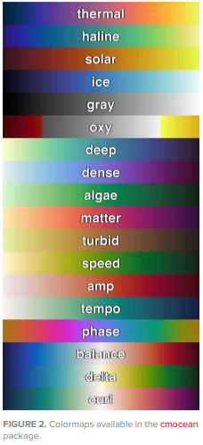
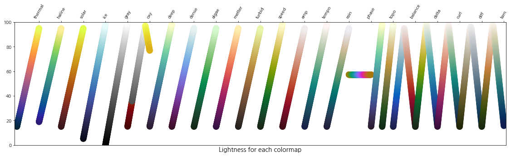
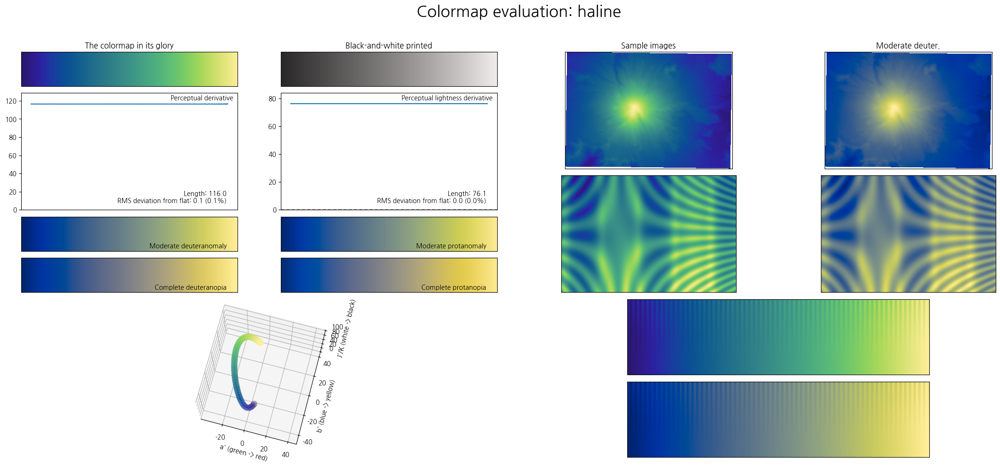
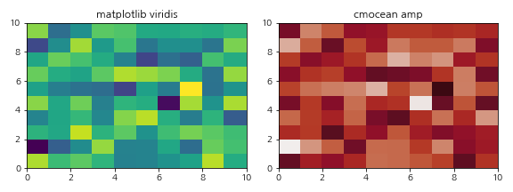
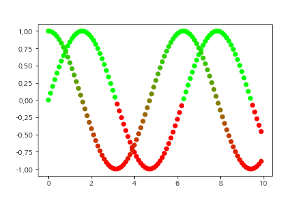
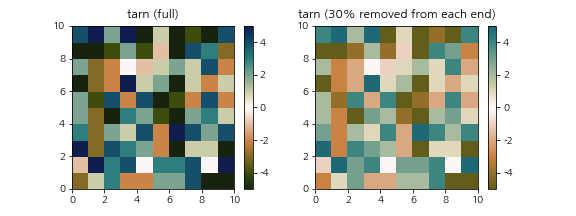
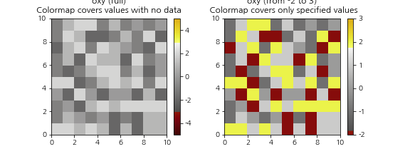

Beatutiful colormaps for oceanography: cmocean
main developer: Krysten Thyng
Thyng, K. M., Greene, C. A., Hetland, R. D., Zimmerle, H. M., & DiMarco, S. F. (2016). True colors of oceanography. Oceanography, 29(3), 10.

- 새로운 colormap은 그림을 신선하게 합니다.
- 도메인에 맞는 colormap은 데이터를 정확하게 전달합니다.
- 해양학(oceanography)을 위한 colormap, cmocean을 소개합니다.
- Plotly, Tableau, Paraview, Matlab, R에서도 사용 가능합니다.
1. 개발 & 관리
cmocean은 Kristen Thyng을 중심으로 개발되었습니다.
2016년 처음으로 공개되었으며 github issue 기준 2020년 12월 10일까지 대응되었습니다.
논문으로 출판되었습니다: Thyng, K. M., Greene, C. A., Hetland, R. D., Zimmerle, H. M., & DiMarco, S. F. (2016). True colors of oceanography. Oceanography, 29(3), 10.
도메인 지식을 직관적으로 전달하도록 설계되어 있습니다.
데이터의 내용에 맞는 colormap을 제공합니다.


2. 시각적 특징
- matplotlib이나 seaborn 제공 colormap 대비 톤 다운되어 있습니다.
- perceptually uniform하여 데이터를 정량적으로 전달하기 좋습니다.

3. 기능적 특징
3.1. colormap 훑어보기
- `cmoceans.plots’ 안에 여러 유틸리티를 제공합니다.
.plot_gallery(): 전체 colormap 훑어보기.plot_lightness(): 전체 colormap의 명도 훑어보기wrap_viscm(): 색분포, 색맹의 시선에서 보여주기.

- 일부 아쉬움도 있습니다.
- 1. 저장 폴더 지정됨
- 위 세 명령은
saveplot=True를 지정해 파일로 저장할 수 있습니다. - 그러나 저장 폴더 이름이
./figures로 고정되어 있어 이 폴더가 없으면 에러가 납니다. - 에러가 없도록 코드를 수정하여 pull request하였습니다. (2020.12.28.)
- 위 세 명령은
- 2.
cmoceans.plots를 별도로 import 해야 함.- 위 세 명령을 사용하기 위해서는
pip install "cmocean[plots]"로 설치해야 합니다. - 그러나 예제처럼
cmocean.plots.plot_lightness()으로 사용하면 오류가 납니다. import cmocean.plots as cmplots식으로,.plots()를 별도 import해야 합니다.- 불필요한 라이브러리를 설치하지 않기 위한 장치라는데, 좀 아쉽습니다.
- 위 세 명령을 사용하기 위해서는
- 예를 들면 이렇습니다.
1
2
3
4
5import cmocean.plots as cmplots
import cmocean.cm as cmo
haline = cmo.haline
cmplots.wrap_viscm(haline, saveplot=True)
3.2. matplotlib colormap과 완벽 호환
- matplotlib colormap을 부르듯 부르면 됩니다.
- 단, import를
cmo라고 해야만 하네요.1
2
3
4
5
6
7
8
9
10
11
12
13from matplotlib import cm
import cmocean.cm as cmo
Z = np.random.randn(10,10)
fig, axs = plt.subplots(ncols=2, figsize=(8, 3))
axs[0].pcolormesh(Z, cmap=cm.viridis)
axs[0].set_title("matplotlib viridis")
axs[1].pcolormesh(Z, cmap="cmo.amp")
axs[1].set_title("cmocean amp")
fig.tight_layout()
4. 그 외 utility
- matplotlib 기능을 wrapping한 것들입니다.
- matplotlib에서 번거로운 것들이 많이 편리해졌습니다.
4.1. colormap 제작
- 두 색을 넣어주면 interpolation으로 컬러맵을 만들어 줍니다.
- matplotlib을 곧장 사용해서도 할 수 있지만, 더 편리하네요.
1
2
3
4
5
6
7
8
9RG2 = cmocean.tools.cmap(["#FF0000", "#00FF00"], N=2)
RG256 = cmocean.tools.cmap(["#FF0000", "#00FF00"], N=256)
X = np.arange(0, 10, 0.1)
Y1 = np.sin(X)
Y2 = np.cos(X)
plt.scatter(X, Y1, c=Y1, cmap=RG2, label="RG2")
plt.scatter(X, Y2, c=Y2, cmap=RG256, label="RG256")
4.2. colormap clipping
- colormap의 일부 영역만 사용하는 기능입니다.
- matplotlib은 좀 번거롭습니다만 여기선 간단히 구현해 주네요.
- colormap 비율로 자르기
- 옵션에 따라 한쪽, 또는 양쪽에서 특정 비율만큼 잘라낸 colormap을 씁니다.
1
2
3
4
5
6
7
8
9
10
11
12
13
14A = np.random.randint(-5, 6, (10, 10))
tarn = cmo.tarn
tarn_crop = cmocean.tools.crop_by_percent(tarn, 30, which="both")
fig, axs = plt.subplots(ncols=2, figsize=(8, 3))
im0 = axs[0].pcolormesh(A, cmap=tarn)
axs[0].set_title("tarn (full)", pad=8)
fig.colorbar(im0, ax=axs[0])
im1 = axs[1].pcolormesh(A, cmap=tarn_crop)
axs[1].set_title("tarn (30% removed from each end)", pad=8)
fig.colorbar(im1, ax=axs[1])
- 데이터 값으로 자르기
- 지정된 데이터 내에 colormap을 설정합니다.
1
2
3
4
5
6
7
8
9
10
11
12
13
14vmin, vmax = -2, 3
A = np.random.randint(vmin, vmax, (10, 10))
oxy = cmo.oxy
oxy_crop = cmocean.tools.crop(oxy, vmin, vmax, 0)
fig, axs = plt.subplots(ncols=2, figsize=(8, 3))
im0 = axs[0].pcolormesh(A, cmap=oxy, vmin=-5, vmax=5)
axs[0].set_title("oxy (full)\nColormap covers values with no data", pad=8)
fig.colorbar(im0, ax=axs[0])
im1 = axs[1].pcolormesh(A, cmap=oxy_crop, vmin=vmin, vmax=vmax)
axs[1].set_title("oxy (from -2 to 3)\n Colormap covers specified values only", pad=8)
fig.colorbar(im1, ax=axs[1])